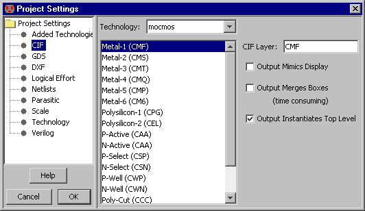

CIF (Caltech Intermediate Format) is used as an interchange between
design systems and fabrication facilities.
Control of CIF I/O is done with the CIF Preferences
(in menu File / Preferences..., "I/O" section, "CIF" tab).

Project Preferences
The CIF Project Preferences let you can assign CIF names to each layer in the technology.
It also offers these controls:
- "Output Mimics Display"
lets you use CIF output for printing.
By default, CIF output writes the entire hierarchy below the current cell.
If you check this box, cell instances that are unexpanded will be represented as an outline in the CIF file.
This is useful when the CIF output is intended for hardcopy display,
and only the screen content is desired.
- "Output Merges Boxes"
controls the aggregation of geometry when writing CIF.
This is an issue because of the duplication and overlap that occurs wherever arcs and nodes meet.
The default action is to write each node and arc individually.
This makes the file larger because of redundant box information,
however it is faster to generate and uses simpler constructs.
If you check this box, all connecting regions on the same layer are merged into one complex polygon.
This requires more processing, produces a smaller file, and generates more complex constructs.
- "Output Instantiates Top Level"
controls whether or not to instantiate the circuit in the CIF.
By default, the currently displayed cell becomes the top level of the CIF file,
and is instantiated at the end of the file.
This causes the CIF file to display the current cell.
If, however, the CIF file is to be used as a library, with no current cell,
then uncheck this box, and there will be no invocation of the current cell.
- "Output scale"
controls the scaling factor used in cell headers when writing CIF.
Be advised that the CIF format has a minimum resolution of 10 nanometers.
Since nothing smaller can be accurately represented in the file, the CIF output of smaller geometries will
generate errors.
The workaround is to set a large scale here, which will cause all numbers in the CIF file to be scaled
by that amount, and then divided by that amount in the cell header.
The resulting CIF will be the same size, but it will be able to represent smaller values.
User Preferences
There is just one User Preference: "Input Squares Wires."
When reading CIF files, the CIF "wire" statements are assumed to have rounded geometry at the ends and corners.
If you check this box, CIF input assumes that wire ends are square and extend by half of their width.